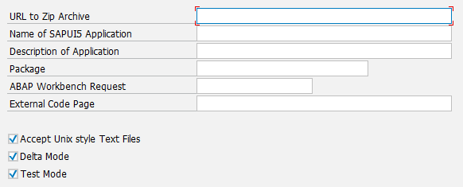

Using an Interactive ABAP Report to Synchronize
You can either upload a OpenUI5 application to or download a OpenUI5 application from the OpenUI5 repository by using an interactive ABAP report.
Context
Uploading or Downloading a single OpenUI5 Application
Prerequisites
You have installed the SAP UI Add-On 1.0 or SAP NetWeaver 7.4 or later.
To upload or download a single OpenUI5 application, use the report /UI5/UI5_REPOSITORY_LOAD. When running the report, enter the name of the OpenUI5 application in the respective input field on the screen. The report selection screen also features a checkbox allowing you to specify whether or not the line endings should be adjusted automatically during the upload.
Compared to the ABAP team repository provider it does not offer a built-in code
merge. Here, a separate source code repository like git or Subversion (SVN) may be
used. The report is shipped via SAP note 1793771  Up/Download SAPUI5 Application into/from UI5 Repository and as part of the UI
add-on for SAP NetWeaver SP03
delivery.
Up/Download SAPUI5 Application into/from UI5 Repository and as part of the UI
add-on for SAP NetWeaver SP03
delivery.
Uploading one or more OpenUI5 Applications from an Archive
Prerequisites
You have installed the user interface add-on version 1.0 SP06 or SAP NetWeaver 7.4 SP05.
- To upload a OpenUI5 application from a zip or war archive, use /UI5/UI5_REPOSITORY_LOAD_HTTP.
- To upload several OpenUI5 applications from a zip or war archive at once, use /UI5/UI5_REPOSITORY_LOAD_HTTPN.
To execute the report, you need to provide several parameters, as displayed in the following screenshot.
You can either enter the parameters in the displayed input fields or you provide them in an optional file .Ui5RepositoryUploadParameters located in the archive. Each line represents a parameter. The format is <parameter name> = <parameter value>.
The report can be run in several modes:
- Delta Mode: Mark this checkbox in case you only want to upload those files, that are new or that have been modified.
- Test Mode: Mark this checkbox in case you want to see a log file displaying what the report is doing.
Additionally, both reports and the function module /UI5/UI5_REPOSITORY_LOAD_HTTP have the following features:
- They can automatically convert text files from unix format to windows-like format.
- You can schedule them on the SAP Web Application Server.
- The possibility to automate Maven builds as a remote-enabled function module is available.
For more information, see the report documentation as well as the documentation
of the function module /UI5/UI5_REPOSITORY_LOAD_HTTP in the system
and SAP note 1893133 .